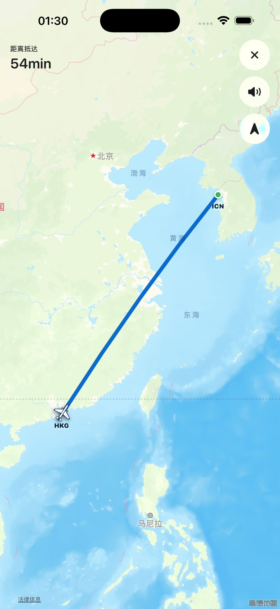
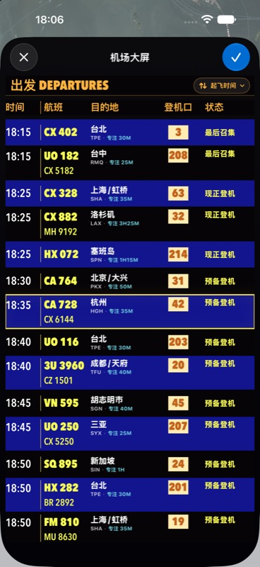
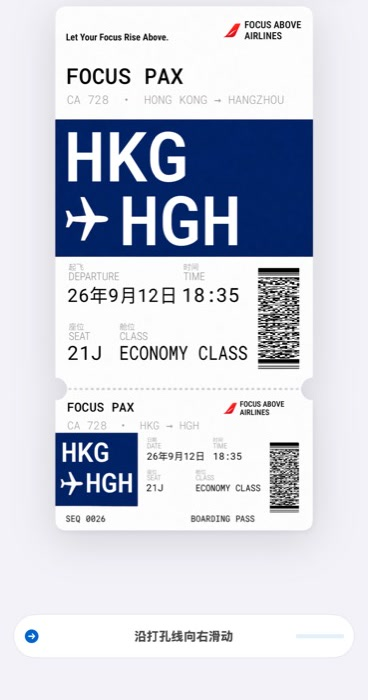
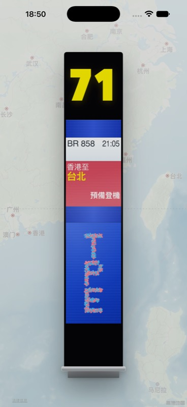

一次专注，一趟旅程
从选择航班，到亲手撕下票根。
Focus Above 不把开始专注简化成一个按钮，而是把出发前的每一步都变成仪式。
-

01 / DEPARTURES从航班大屏，选一趟旅程。
真实离港大屏般的航班牌，把目的地、登机口与专注时长放在同一次选择里。
-

02 / BOARDING PASS沿打孔线，亲手撕下票根。
出票后滑动撕票。一个简单的手势，把“我要开始了”变成看得见、摸得到的决定。
-

03 / AT THE GATE在登机口，等候起飞。
翻页航班牌、粒子目的地与倒计时一起建立候机氛围，随后自然进入飞行专注。
IN THE AIR
飞行途中，只做眼前的事。
航班从候机自然进入飞行。地图沿航线前进，剩余时间始终清晰，界面把打扰留在地面。
- 01真实航班灵感
- 02Standard 与 Hybrid 地图
- 03连续机舱环境音
- 04iPhone 与 iPad 自适应
YOUR FLIGHT LOG
每一道航迹，
都是专注留下的印记。
完成的旅程会收进飞行档案。沿着世界地图回看抵达过的机场、累计专注时间与飞行距离。
12抵达机场
840专注分钟
8,426飞行公里
READY FOR DEPARTURE
下一趟专注旅程，
准备起飞。
Focus Above 即将登陆 App Store。